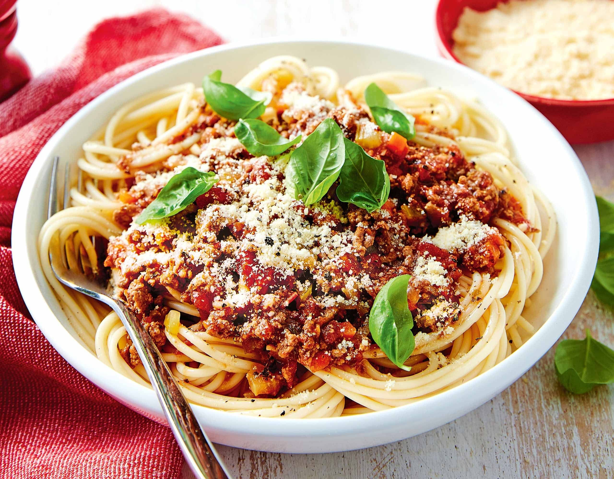

Recept pasta bolognese

- 2 potten tomatensaus met basilicum “Basilico” 450 g spaghetti Delhaize
- 450 g spaghetti Delhaize
- 400 g ongekruid gehakt varken/rund of varken/kalf
- 1 grote ui
- 160 g wortelen
- 1 afgestreken eetlepel Italiaanse kruiden
- 1 zakje geraspte parmigiano reggiano
- 4 eetlepels olijfolie
Ingrediënten
- Verwarm een ruime hoeveelheid licht gezouten water in een kookpot.
- Verwarm 2 eetlepels olijfolie in een grote, diepe pan en doe er de gesnipperde ui,
de grof geraspte wortelen en het gehakt in. Bestrooi met de Italiaanse kruiden en bak op
vrij hoog vuur. Gebruik een spatel om het geheel in kleinere stukken te breken. Voeg, wanneer
alles lichtbruin gebakken is, de tomatensaus toe, peper en zout.
Giet 5 cl water in elke bokaal, sluit de bokalen, schud en voeg het water toe aan de saus. Laat zachtjes sudderen.
- Voeg 2 eetlepels olijfolie toe aan het kookwater en kook er de spaghetti gelijktijdig “al dente” in.
Giet de spaghetti af en dien onmiddellijk op met de bolognaisesaus. Serveer met geraspte parmezaan.